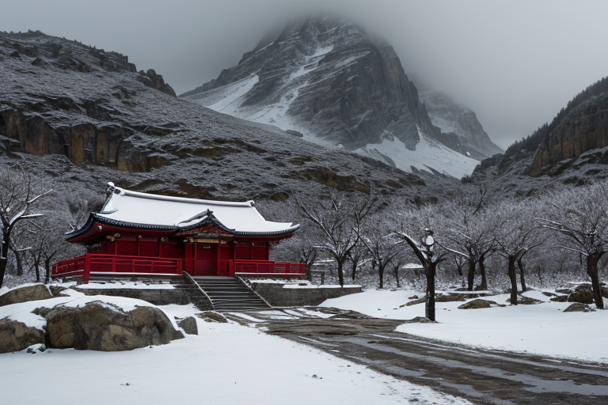
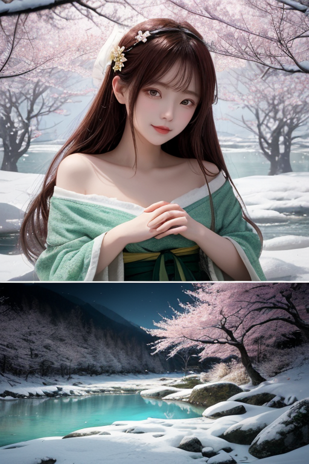
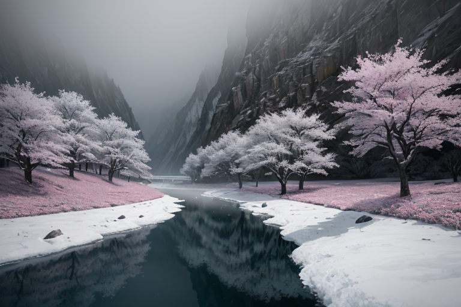
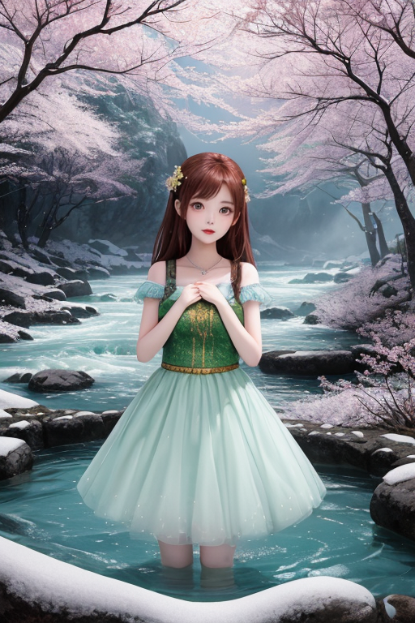
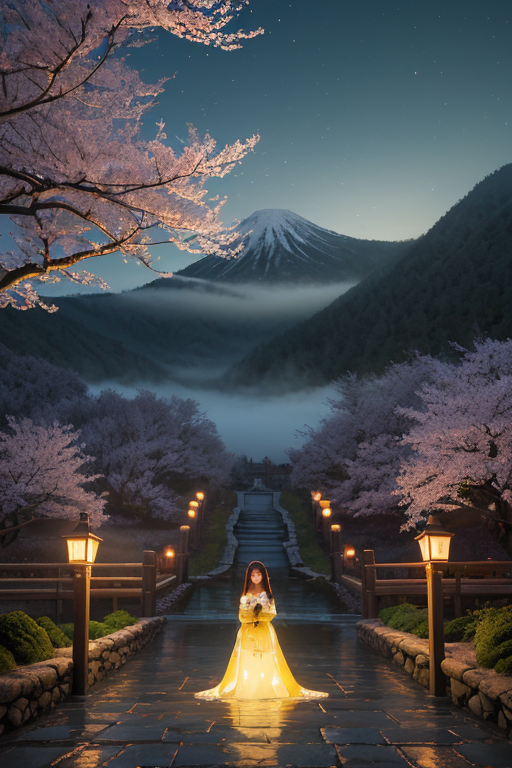

第一章 現実の山形
あなたはまだ気づいていない。この土地にも、王がいることを。
山寺の石段は、苔むし、冷たい。芭蕉が「閑さや」と詠んだその静寂は、今も変わらず、訪れる者を深い沈黙へと誘う。しかし、その沈黙の底には、常に微かな軋みが潜んでいる。大地の歪みだ。東北の地殻は複雑に絡み合い、時折、その緊張を解き放とうとする。蔵王の山肌は、冬には樹氷という異形の衣をまとう。それは美しいが、同時に、この地に蓄積される「何か」の、凍りついた表象のようにも見える。
その「何か」は、長い時間、封じられてきた。忍耐の時間だ。実りを待つ果樹園の、春の霜害に耐える時間。雪深い冬を、囲炉裏端で静かに過ごす時間。それはこの土地の質感そのものとなり、さくらんぼの赤も、芋煮の温もりも、その中で育まれてきた。
王はここにいる。歪みを調整するため、星から遣わされた47人の一人が。しかし、この山形の王は、他の王とは少し違う。その力の多くが、自らを縛る「封印」によって封じられている。なぜか。答えは、王自身も知らない。ただ、この地の「忍耐」という特質が、王の本質と深く共振し、ある危うい均衡を生み出していることは感じていた。待つことは、果たして敗北なのか。それとも、より深い実りのための、必要な時なのか。石段を登る風の音だけが、空虚に響く。

第二章「歪みの兆候」
蔵王の樹氷が、例年より早く解け始めた。それは妖精たちの間でささやかれる、微かな異変の一つに過ぎない。地中の歪みは、封印によって鈍く、遅く調整されていた。王は最上川のほとりに立ち、流れの速度を0.1％緩める。かつて芭蕉が「五月雨をあつめて早し最上川」と詠んだその水勢を、ほんの少しだけ和らげるのが、今の彼にできる精一杯の仕事だった。
「王よ、焦りは禁物です」
フルッタがそっと肩に止まり、さくらんぼの甘い香りを漂わせた。
「この地は、待つことを知っています。雪に耐え、実りを待つことを」
しかし、王の胸中には、もどかしさが澱のように溜まっていた。銀山温泉の街並みを守る結界に、かすかなヒビが入っているのを感じる。彼の封印された力が完全であれば、この亀裂は一瞬で修復できる。なのに、今はただ、ヒビの広がりを遅らせることしかできない。
待つことは、この無力さに甘んじることなのか。歪みは確実に進行している。彼は拳を握りしめた。手のひらには、自らの紋章である実りの枝が、かすかに疼いた。

第三章 王の葛藤
蔵王の樹氷は、歪みの気配を静かに吸い込んでいた。ヤマガリアは、その冷たい結晶の森を歩きながら、自らの内側と対話していた。解放すべきか。このまま、微調整だけを続け、忍耐という名の「待ち」に徹すべきか。
最上川の流れは、時に氾濫する。それを治めるのは、堤防を築くことであり、流れそのものを止めることではない。彼の役割も同じだ。歪みを完全に消すのではなく、その力を分散させ、土地と人々が耐えられる形に「調整」すること。それが星から与えられた使命だった。
だが、使命と感情は別物だ。彼は今、感情を抱いていた。この土地の、実りを待つ農家の顔が浮かぶ。桜桃の花が散り、小さな実が膨らむまでの、あの静かな緊張。待つことは、決して無為ではない。しかし、今この瞬間にも、歪みの圧力は増している。封印を解き、一時的にでも強大な力を振るえば、この危機は回避できるかもしれない。
「……待つことは、敗北か」
彼は呟き、手のひらの紋章を見つめた。朱と緑が、静かに、しかし確かに脈打っていた。

第四章 妖精との対話
蔵王の樹氷が、月明かりに青白く浮かぶ温泉街。湯気の向こうで、フルッタが静かに語り始めた。
「この封印は、王様ご自身が選ばれたものです」
かつて、この地の歪みは激しかった。山が怒り、川が逆巻く。若き実王は、その全てを一瞬で鎮めようとした。力の奔流は確かに歪みを押し留めたが、代償に土地の“実る力”そのものを奪いかけた。桜桃の木は花を咲かせず、最上川の鮎は遡上を忘れた。彼は自らの力の大半を、出羽三山の修験道が培った“結界”に封じ込めた。力を細く、長く、絶え間なく注ぐ道を選んだのだ。
「待つことは、力の放棄ではございません」サクランが、小さな花のような手を重ねた。「この土地の人は知っています。雪解けを待ち、花の散るのを待ち、実の色づくのを待つことを。そのすべてが、次の実りへの、確かな過程であることを」
湯気がゆらめき、王の手のひらの紋章が微かに温かい。封印は枷ではない。彼がこの土地と交わした、静かなる忍耐の契約だった。

第五章 微調整と余韻
蔵王温泉の湯気の向こう、歪みの脈動は沈静化していた。王は手のひらの紋章を見つめた。朱と緑の枝が、今は確かに山影を支えている。彼は力を振り絞るのではなく、流れを整える微調整を選んだ。樹氷が風雪を一身に受け止めて形作られるように、彼はこの土地の「待つ力」を回路とした。揺れは消えず、しかしその衝撃は、最上川が長い歳月をかけて山肌を滑らかにしたように、ほんの少しだけ和らげられた。代償として、彼の内側にあった「急ぎ」の感情が、色を失い始めていた。
山寺の石段を下りる芭蕉のように、彼は一歩ずつ歩を進めた。待つことは敗北ではない。この列島で最も豊かな実りは、常に長い冬の後に訪れる。彼はそれを知っている。ただ、彼自身の「冬」が、これからどれほど続くのかは、まだ誰にもわからない。
湯気が立ち昇る銀山温泉の街並みに、ほのかな桜色が灯った。サクランがそっと彼の肩に触れる。感情の喪失は、新たな忍耐の始まりかもしれない。
あなたの町にも、王がいる。